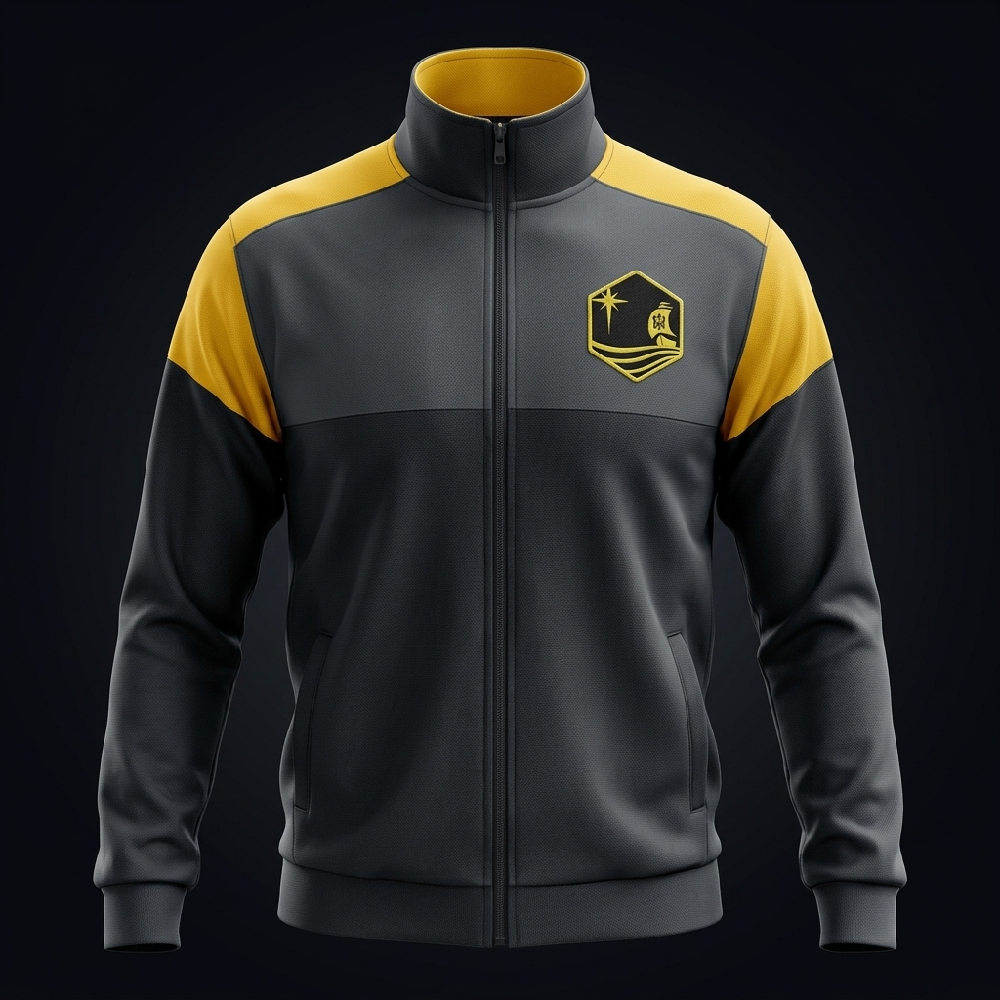
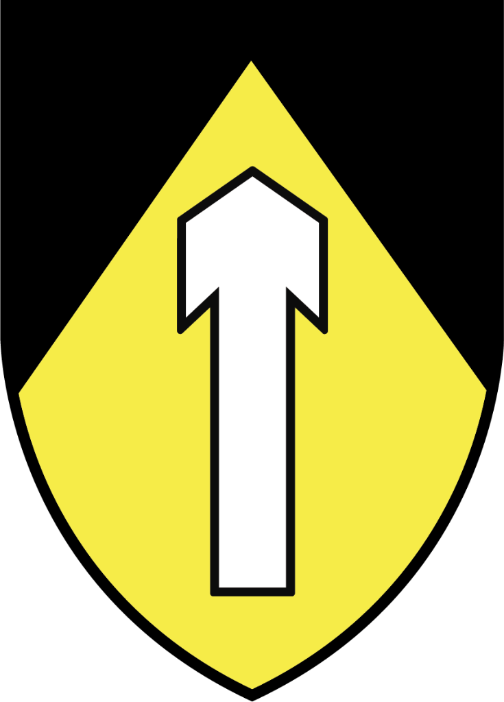
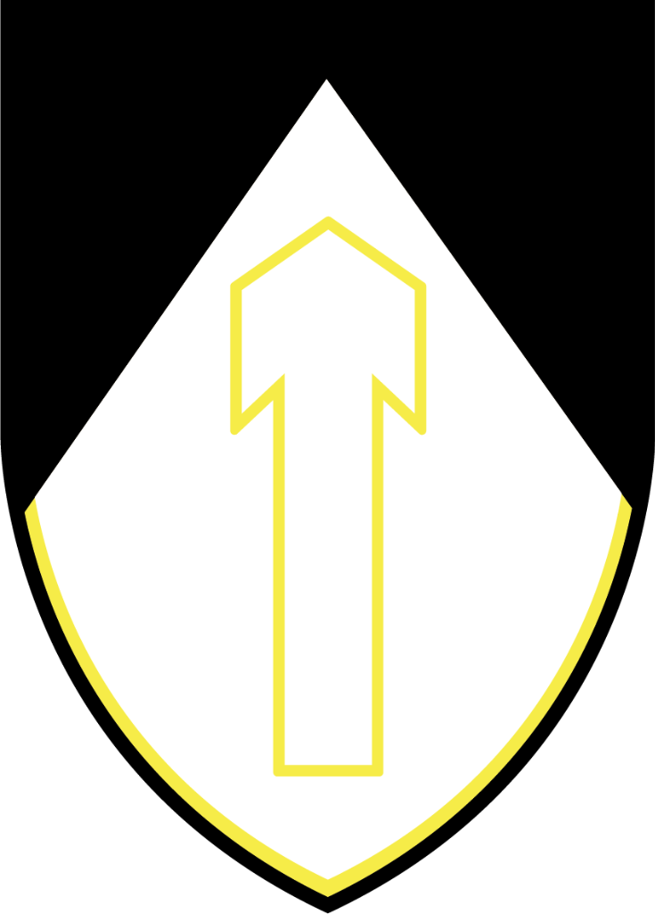
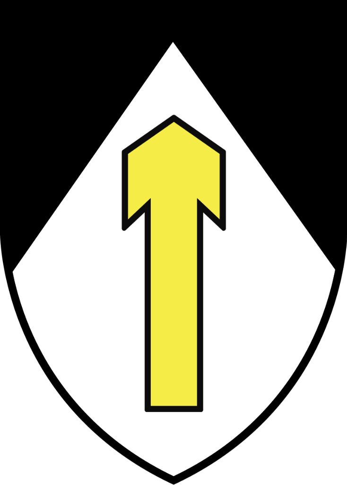
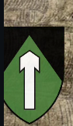
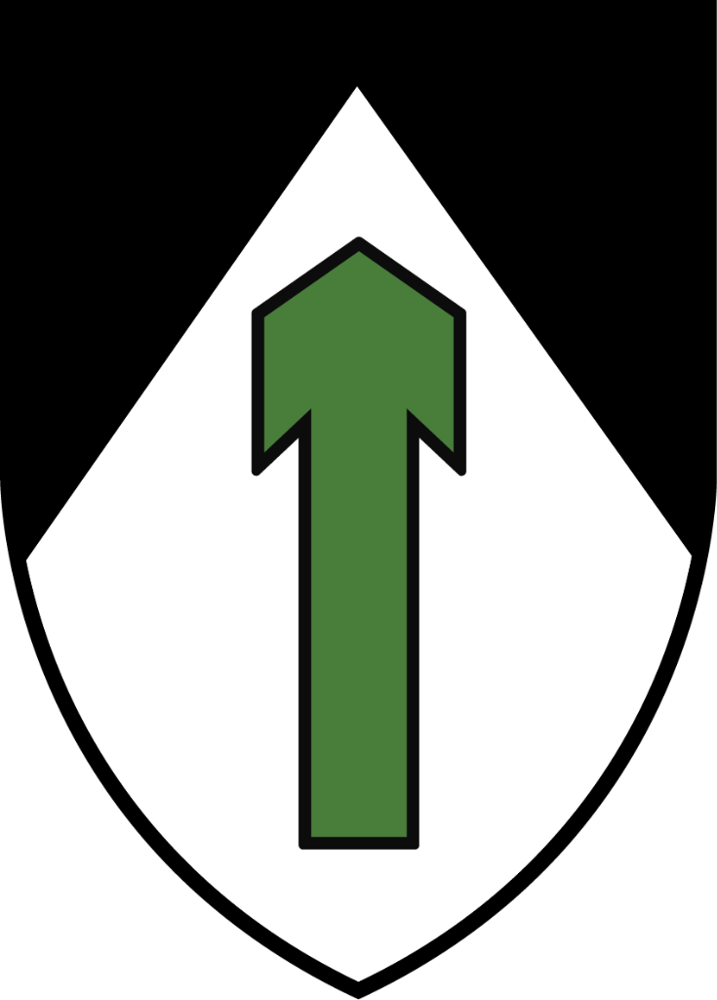
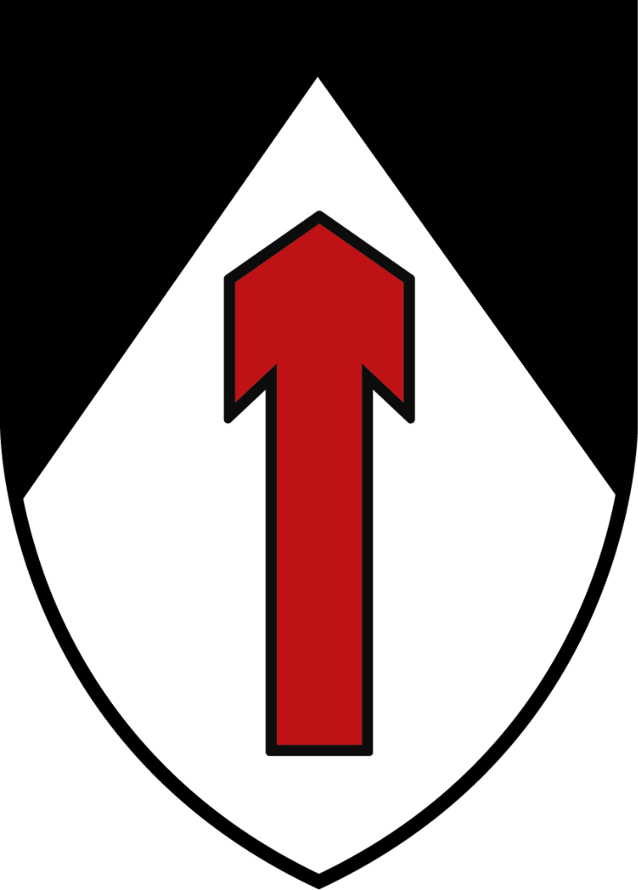

Vestí los Colores de
Mar Adentro
Camperas oficiales, camisetas técnicas de torneo, camisas reglamentarias y gorras con bordado en 3D. Cada prenda refleja la mística de la Casa de Semilla.

Campera Oficial & La Estrella
Modeladas en 3D con vista frontal y trasera
No encontramos esa prenda
Revisa el término de búsqueda o selecciona otra categoría.
Nombre de la Prenda
Detalles de Confección
Descripción...
Ficha Técnica
Nuestras Actividades
En Ruca Tucun cada sábado y cada campamento es una oportunidad de crecer en virtudes, camaradería, fe y aventura al aire libre.
Próximas Actividades & Convocatorias
Hitos de la Comunidad & Eventos Pasados
El Origen de la Casa de Semilla
Desde su fundación en 1989 en Mar del Plata, Ruca Tucun educa el corazón y el espíritu de los jóvenes bajo el lema evangélico de bogar "Mar Adentro".
¿Por qué nos llamamos Ruca Tucun?
La palabra Ruca proviene de la lengua mapuche y significa "Casa", el hogar donde habita la familia y la hermandad comunitaria.
Tucun significa "Semilla". Por lo tanto, Ruca Tucun es la "Casa de la Semilla": el lugar donde se siembran las virtudes de la fe, la lealtad, el coraje y el amor a la patria en el alma de cada niño y joven, esperando que germinen en hombres y mujeres íntegros.
Bajo el cobijo del movimiento FASTA (Fraternidad de Agrupaciones Santo Tomás de Aquino), Ruca Tucun se convirtió en un faro formativo frente a la inmensidad del mar atlántico.
"Duc in altum — Rema mar adentro, echen las redes para pescar." (San Lucas 5, 4)
Somos parte de FASTA
Ruca Tucun es una de las casas de la Organización de Juventudes Argentina, la rama juvenil de la Fraternidad de Agrupaciones Santo Tomás de Aquino.
Qué es FASTA
Una comunidad de laicos, sacerdotes y consagradas de la Iglesia católica, de espiritualidad dominicana. Busca iluminar la cultura con formación espiritual y compromiso cotidiano, y su carisma se vive sobre todo a través de la educación.
Cómo nació
El 7 de octubre de 1962, fiesta de la Virgen del Rosario, en Leones (Córdoba), por inspiración de fray Aníbal Ernesto Fosbery, O.P. Nació como una agrupación juvenil dominicana, en respuesta al llamado del Concilio Vaticano II a promover la participación de los laicos.
Reconocimiento de la Iglesia
Desde 1997 es una asociación internacional de fieles de derecho pontificio. Hoy tiene presencia en diócesis de Argentina, Ecuador, España, Perú y la República Democrática del Congo.
La Ciudad Miliciana y los Rucas
La Organización de Juventudes Argentina tiene una identidad "miliciana", que se expresa en el lenguaje de sus secciones y actividades: milicianos, escuderos, templarios, adalides.
Cada comunidad local es un Ruca, una casa. Al conjunto de todos los Rucas se lo llama, con cariño, Ciudad Miliciana. Y cada vez crece más.
Significado de Nuestro Escudo Heráldico
La Estrella Guía
La Estrella del Norte y de Belén que brilla en el cielo. Representa a Cristo y a la Virgen María guiando el rumbo seguro aun en las noches más oscuras.
La Carabela & Fasta
La nave intrépida que navega desafiando el horizonte. Lleva en su vela mayor el monograma y la cruz de Fasta, signo del apostolado y la evangelización.
Las Olas del Mar
Las olas del mar atlántico de Mar del Plata. Simbolizan el oleaje del mundo y los desafíos de la vida que se navegan con temple y hermandad.
El Hexágono Oro & Negro
El campo negro representa la sobriedad, la disciplina y el honor. El ribete dorado encarna la nobleza de ideales y la luz que no perece.
Nuestras Agrupaciones y Secciones
Cada sección posee su insignia tradicional con la saeta orientada al cielo, reflejo del ideal caballeresco y la etapa de crecimiento de cada miliciano.
Caperucitas, Herederas y Adalidas
Formación de niñas y jóvenes en la pureza, el servicio abnegado, la delicadeza, la alegría comunitaria y las virtudes del hogar cristiano en marchas y campamentos.



Escuderos y Templarios
Juegos de destreza física, caballerosidad, protección al prójimo, forja del carácter viril, hermandad leal y espíritu de aventura en el campo.


Jóvenes Universitarios y Mandos
Los jóvenes mayores y universitarios (18 a 25 años aproximadamente). Conducen las agrupaciones con testimonio de vida, entrega generosa, estudio, vida sacramental y liderazgo servicial en la Casa de Semilla.

Línea Histórica de Jefes de Ruca
Hombres que lideraron la Casa de Semilla a lo largo de las décadas. Hacé clic en cualquier tarjeta para ver el Comando de Ruca completo (Comando Agrupación Femenina, Agrupación Masculina y Milicianos).
1ª Jefatura Fundacional
Nombre del Jefe
⚜️ Comando de Ruca (Conducción y Oficiales):
Nombre por completar
Caperucitas, Herederas y AdalidasNombre por completar
Escuderos y TemplariosNombre por completar
Mandos y Cuadros Dirigenciales